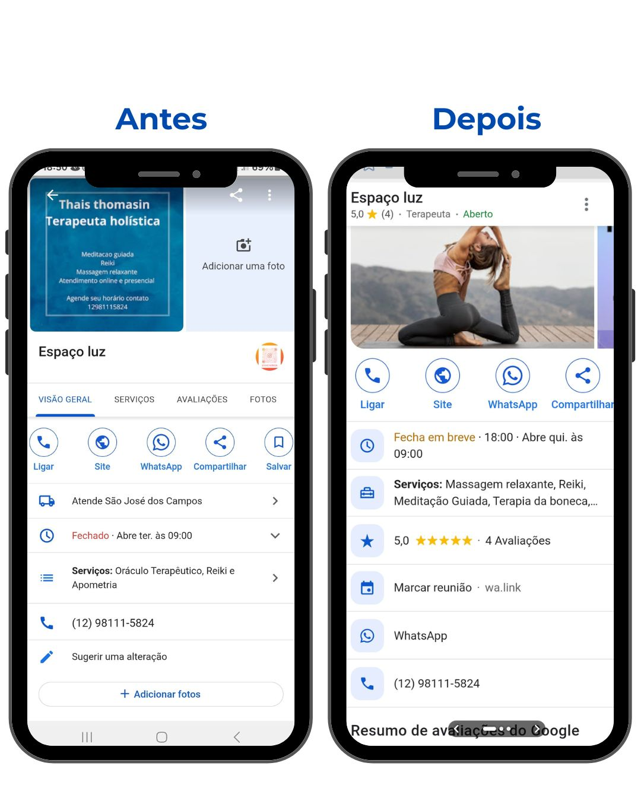
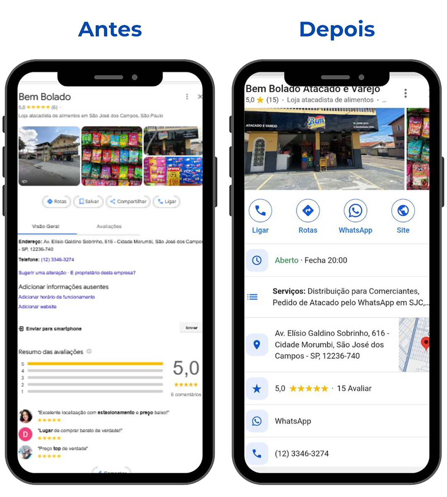
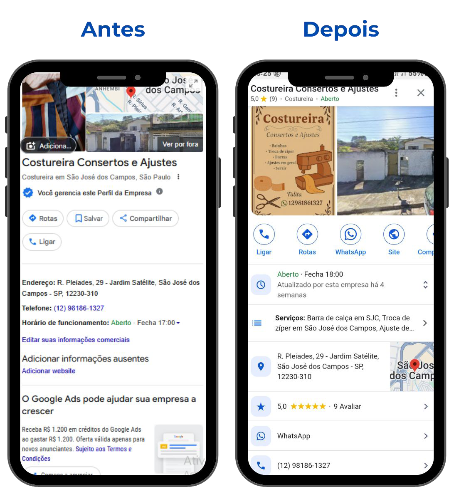
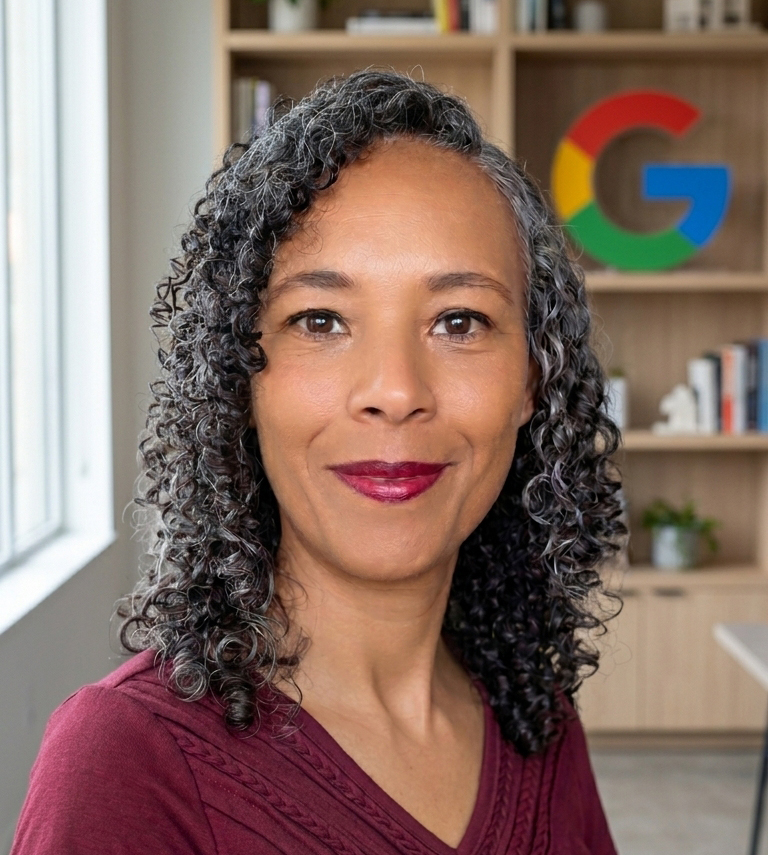
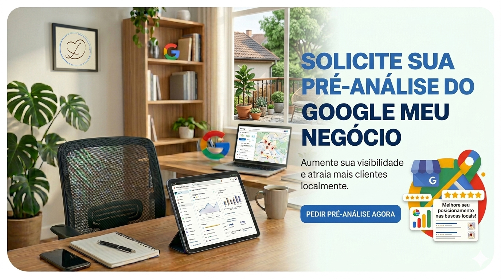
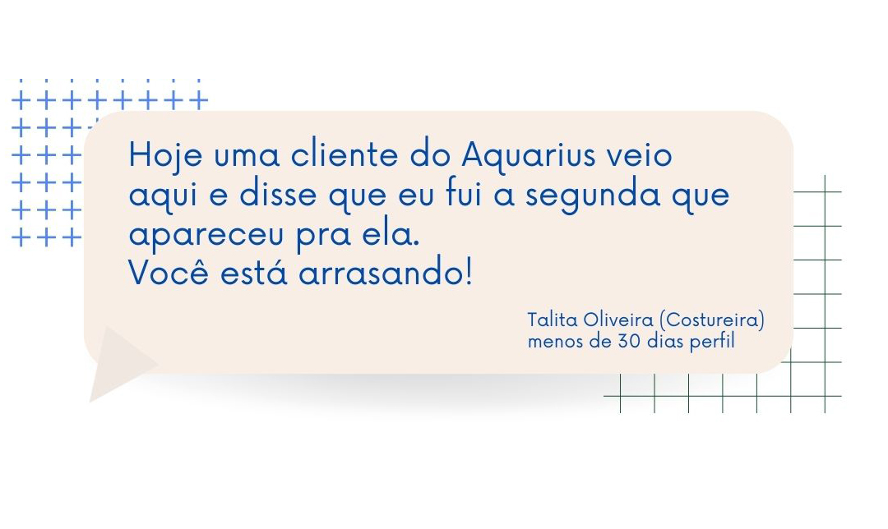
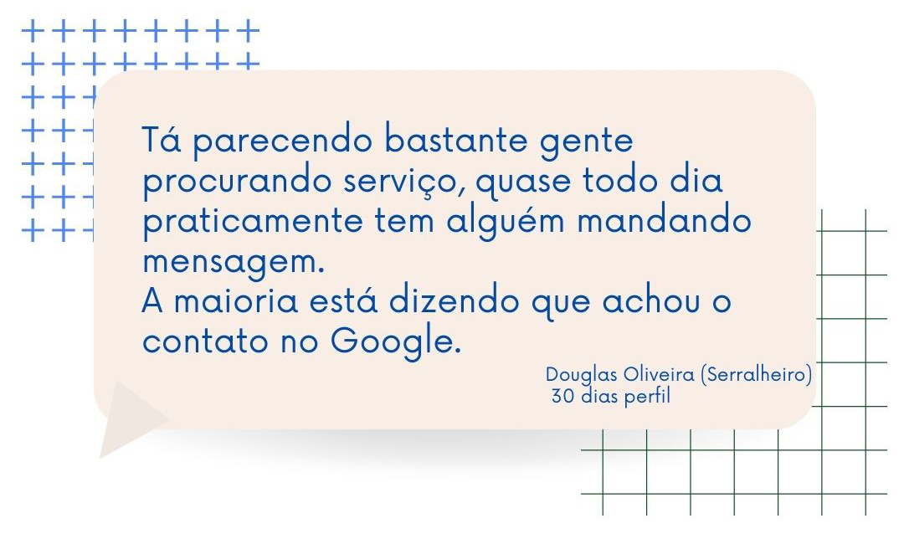
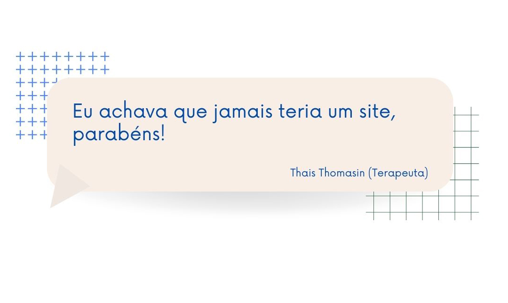

01
Otimização do Perfil
Deixamos as informações do seu negócio organizadas, claras e prontas para ajudar você a aparecer nas buscas.
Eu ajudo negócios locais e prestadores de serviço a serem encontrados no Google e no Google Maps por pessoas que já estão procurando pelo que eles oferecem.
Quero aparecer no GoogleInformações claras para quem já procura por você.
Não é só sobre estar na internet. É sobre ser encontrado na hora em que alguém precisa do que você oferece.
Uma pessoa procura no Google por um produto ou serviço como o seu.
Seu perfil mostra informações organizadas e uma apresentação que transmite confiança.
A pessoa liga, pede uma rota ou chama você para saber mais.
Vamos entender o que faz sentido para você e cuidar da sua presença com atenção aos detalhes.
Deixamos as informações do seu negócio organizadas, claras e prontas para ajudar você a aparecer nas buscas.
Para quem ainda não tem presença no Google, criamos o perfil com as informações certas desde o início.
Sites simples, bonitos e diretos ao ponto, para mostrar o que você faz e facilitar o contato.
Uma forma prática de levar seus clientes até o seu perfil e incentivar avaliações.
Eu gosto de entender o que cada negócio precisa antes de oferecer qualquer serviço. Não acredito em soluções iguais para todo mundo, porque cada empresa tem sua história, seu público e seus desafios.
Também já estive do outro lado. Trabalhei com artesanato por muito tempo, tive um perfil no Google, mas não conseguia o resultado que esperava. Foi aí que aprendi que não basta ter o perfil no Google, ele precisa entender o negócio para mostrar para pessoas que já estão procurando pelo que oferecemos.
Transparência, excelência e estratégia para ajudar seu negócio a ser encontrado pelas pessoas certas.
Alguns exemplos de antes e depois em perfis que receberam atenção aos detalhes.




Sou Janaina Andrade, gestora de Perfil da Empresa no Google e criadora da Desfrute GMN. Ajudo negócios locais e prestadores de serviço a aparecerem no Google e no Google Maps.
Antes de começar qualquer trabalho, gosto de conhecer o seu negócio e entender o que você quer conquistar. Assim, conseguimos cuidar da sua presença no Google de um jeito mais verdadeiro e alinhado com o que você faz.
Vamos conversar
Preencha o formulário rápido de pré-análise. Assim, você já começa entendendo o que pode ser melhorado para facilitar que mais pessoas encontrem o seu negócio.
Pedir minha pré-análiseMensagens reais de quem começou a receber mais contatos depois de cuidar do perfil.



Não. Se você presta serviços, também pode ter presença no Google, de acordo com a forma como atende seus clientes.
Ninguém pode prometer isso. O objetivo é deixar seu perfil bem estruturado e aumentar suas chances de ser encontrado.
Depois que reunimos as informações necessárias, já dá para começar a organizar o perfil. Os resultados podem variar conforme o seu mercado e a concorrência.
É só me chamar no WhatsApp. Vamos conversar sobre o seu negócio e entender o melhor caminho.